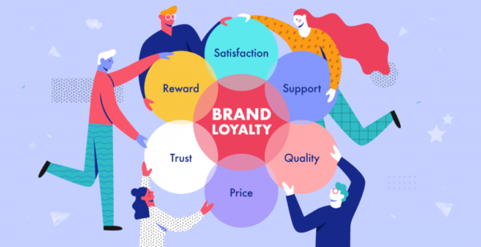

Web Development
Web Applications allows users interact safely and uniquely with online systems via the use of Online or Web Forms, which are usually Graphical Users' Interface (GUI) with aesthetic feels that initial online conservation, sustain online relationships and promote popular ideologies about a product, brand or societal issues.

Mobile App Development
Mobile Applications takes over the world of our devices ranging from smart phones, smart devices, and special duty devices. The revolution of this career path is why there is speedy and steady dynamism in modern lifestyle, communication device, etc.

Cybersecurity
Since the world concepts and systems are influence data, there is an increased need to defend the integrity of data. Exposure of data increased the risk associated with data integrity. Data must be protected through legal technics and kept away from the hunters who threaten the sanity of those data. Cybersecurity is a great career path for a safe society. Since government policies, leadership and societal decision centers on data - data integrity must be protected.

Business Intelligence
Through Data Analytics business organizations and corporate individuals make meaning out of specific data sets. This discovery support decision making that promotes business growth. Customer behaviourial pattern, Market changes and indexes can be measured, track and the knowledge learned can used to enhance production decision, forecasting as the data models ungoing data visualization.

Graphics and Animations
Nature is captured in thoughts and expressed through creative arts, designs and imagery. Many individual finds their niches and chart a wealthy career paths in graphics designing. Begining from Industrial Designs, 3D Animated Designs, Rasters Graphics, Plain Arts, Arts Gallery, etc. Graphics Design puts cultural perspective to our daily lifestyles and they are express via painting, art models, computer aided designs (CAD), Architectural and Civil Engineering complex designing, etc.

Artificial Intelligence
Many industries required a systematic trend of functional operations with minimal error control mechanism. It is proven than machines outshine humans in every manufacturing or industrial processes. Prone with errors due to human tendencies, machines are taking over the larger share of the modern industrial process although human must supervise the machine to prevent wearing and tearing as well as autonomousity of the machine through engineering behaviour.